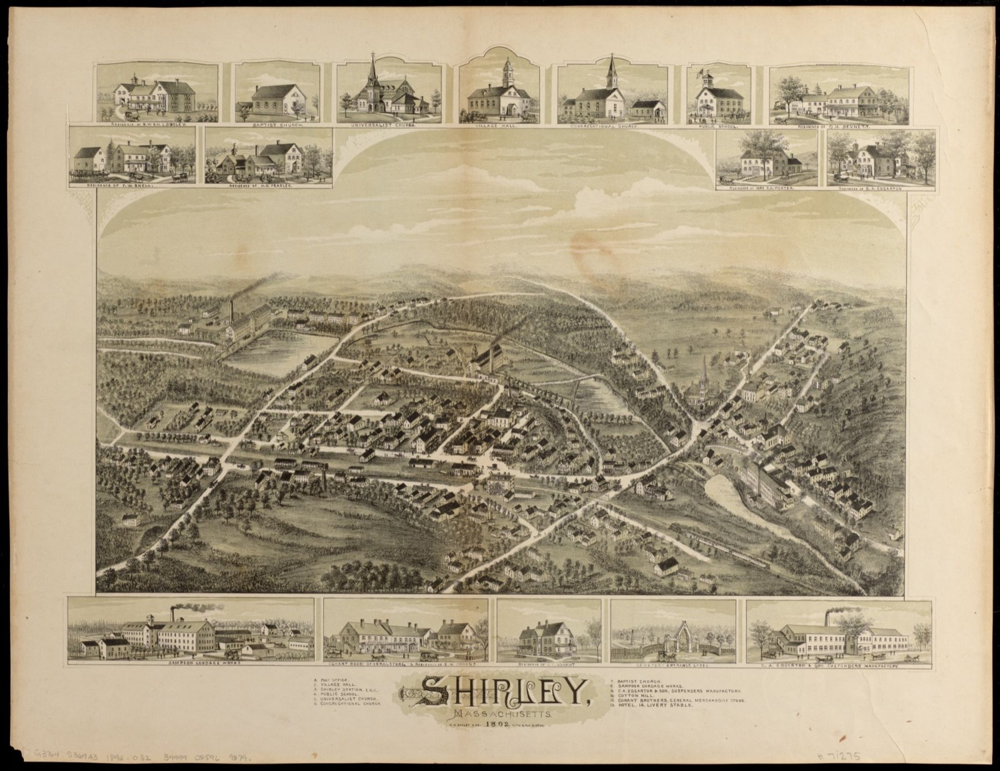
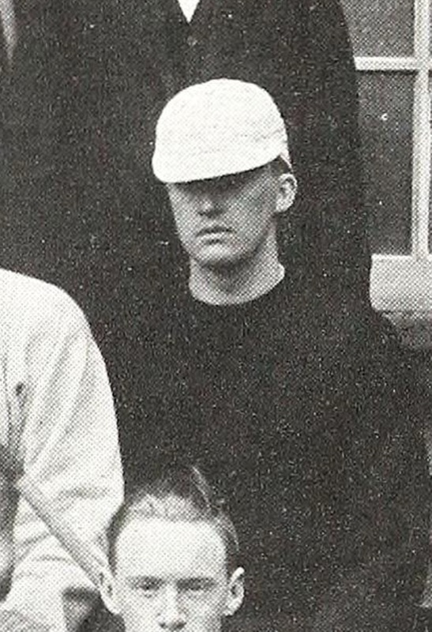
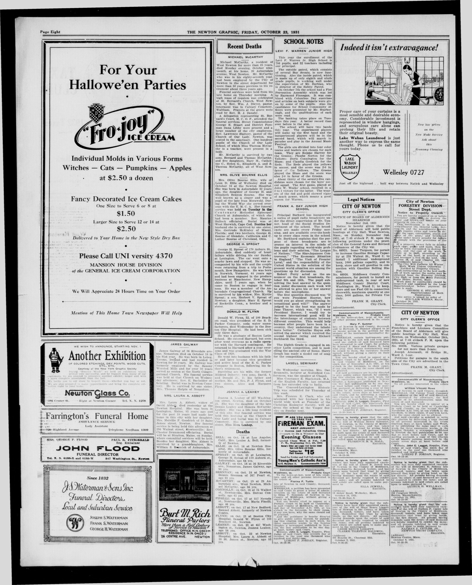
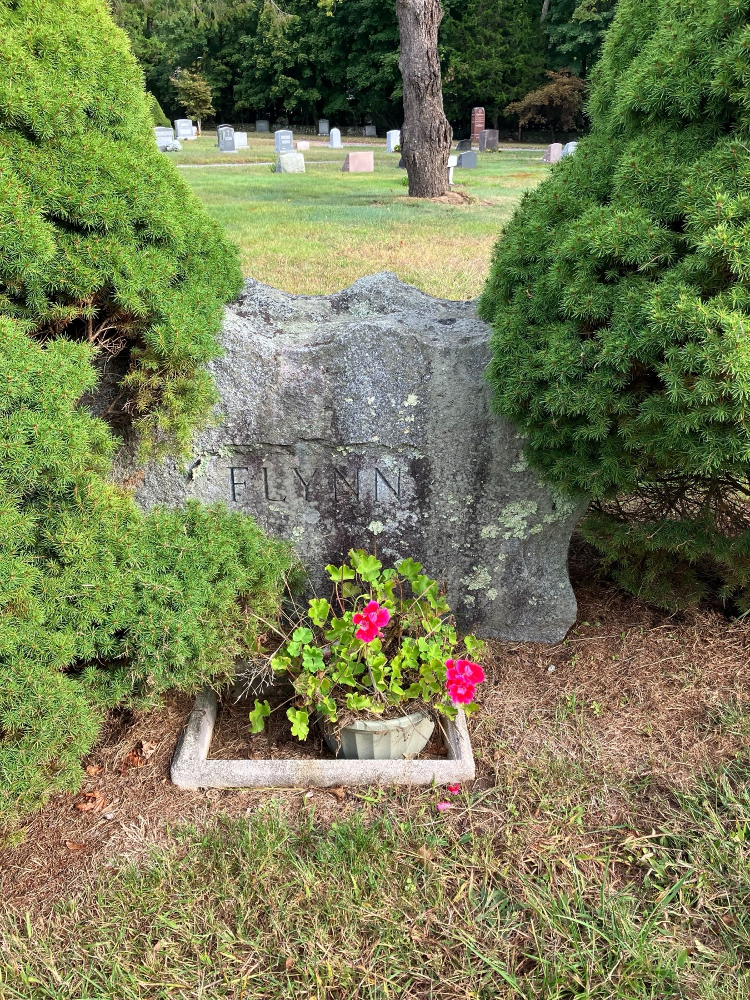

<meta charset="utf-8">
<meta name="viewport" content="width=device-width, initial-scale=1">
<meta name="robots" content="noindex">
<title>Flynn: Kerry to Boston</title>
<link rel="stylesheet" href="style.css">

<nav>
  <a href="index.html">Home</a>
  <a href="quintanilla.html">Quintanilla</a>
  <a href="martinez.html">Martinez</a>
  <a class="here" href="flynn.html">Flynn</a>
  <a href="maccoll.html">MacColl</a>
</nav>

<main>
<h1>Flynn</h1>
<p class="sub">My father's father's father's family. Nine generations, from a mud-floor townland in County Kerry to a bank office in Rhode Island — with two young deaths in the middle that nearly erased the whole story.</p>

<p>I grew up knowing almost nothing about this side. Not because anyone was hiding it. Because the people who could have told me died too early.</p>

<p>My great-grandfather died at 33. His son — my grandfather — died at 42. When that happens twice in a row, there is nobody left who was a grown-up the first time round. The stories don't get passed down. They just stop.</p>

<p>So I went and found them in paper instead: parish registers from Kerry, Massachusetts death certificates, censuses, tax rolls, small-town newspapers, a Harvard yearbook, and a Rhode Island weekly that nobody has read since 1973. This is what came back.</p>

<p><strong>A quick note on how to read this.</strong> Genealogy is full of confident guesses. I've tried not to make any. So each claim carries a tag:
<span class="badge proven">Proven</span> means I read it on the original document with my own eyes.
<span class="badge probable">Probable</span> means everything points that way but one record is missing.
<span class="badge lore">Candidate</span> means it's a decent guess and nothing more. If something has no tag, it's context, not evidence.</p>

<hr>

<h2>Part One — Ireland</h2>

<h2>A place called Curraheen</h2>

<p>Everything starts in one small patch of ground in County Kerry, in the far southwest of Ireland, a couple of miles outside the town of Tralee. It's called <strong>Curraheen</strong>.</p>

<p>Ireland is divided into thousands of tiny units called townlands — usually just a few hundred acres, often only a few dozen families. Curraheen was about 2,300 acres. In 1841 it held <strong>292 people in 44 houses</strong>.</p>

<p>Two things about it matter enormously for this story.</p>

<p><strong>First, the Catholic chapel for the whole parish stood in Curraheen itself.</strong> A geography book published in 1837 says so flatly: "the chapel is at Curragheen, 1½ mile to the west of Blennerville." The chapel even shows up as a line item on the government's own property valuation — "R. C. Chapel and yard," valued at about four pounds thirteen shillings <span class="badge proven">Proven</span>. So when the priest wrote "of Curriheen" beside my family's name in the register, over and over across three generations, he wasn't noting where they'd travelled in from. <strong>They lived at the church.</strong></p>

<p><strong>Second, my family owned none of it.</strong> Not an acre. I'll come back to that.</p>

<h2>The oldest people I can name</h2>

<p>The furthest back I can go is a couple born sometime in the 1780s: <strong>Michael Flynn</strong> and <strong>Joanna Crean</strong>.</p>

<p>They lived in a neighbouring townland called Lyad, in the parish of Ratass, and between 1806 and 1815 they carried four babies to the church at Tralee to be baptised <span class="badge proven">Proven</span>:</p>

<blockquote>
<p><strong>Dermot</strong> — 4 February 1806<br>
<strong>Patrick</strong> — 2 May 1808<br>
<strong>Elizabeth</strong> — 24 October 1812<br>
<strong>Michael</strong> — 28 May 1815</p>
</blockquote>

<figure>
  
  <figcaption>The Tralee baptism register, February 1806. Halfway down: <em>"Dermot, son of Michael Flynn &amp; Joanna Crean, of Lied."</em> That baby grew up to be my great-great-great-great-grandfather. This is the oldest piece of paper in my family.</figcaption>
</figure>

<p>Here's a small human detail I love. The godmother at the first baby's baptism in 1806 was an <strong>Elizabeth Flynn</strong>. Nine years later, at the last baby's baptism in 1815, the godmother was <em>the same Elizabeth Flynn</em>. And the daughter born in between, in 1812, was named Elizabeth <span class="badge proven">Proven</span>.</p>

<p>We don't know exactly who she was — almost certainly Michael's sister. But she was there at the start and there at the end. Somebody's reliable aunt. That's the whole of what survives about her, and it's more than survives about most people who lived in 1806.</p>

<p><strong>And this is where the line stops.</strong> Not "I haven't found it yet" — actually stops. I checked every Roman Catholic baptism register in the entire county of Kerry before the year 1800. There are exactly <strong>three</strong> people named Crean in all of them, and none is a Joanna. Michael and Joanna's own marriage isn't in any Kerry register either. <strong>There is nowhere left to look.</strong> Michael Flynn and Joanna Crean, born in Kerry in the 1780s, are the top of this family.</p>

<p><em>(There is one tempting lead: a Michael Flyn baptised in Tralee in 1772, son of a Thomas Flyn and a Jane Stack. Right parish, right name, right age. But every one of that couple's children is recorded at "Tralee," and mine are at Lyad. It's a guess. <span class="badge lore">Candidate</span> — and it stays a guess, because there's no record left anywhere that could test it.)</em></p>

<h2>They didn't own the ground they farmed</h2>

<p>In 1824 the government surveyed who held land in every townland in Ireland, so it could tax them for the Protestant state church. It's a brutally useful document, because it lists everyone with anything worth taxing.</p>

<p>At Lyad, where Michael Flynn was raising his family, there are eight names. Four of them are Howards. <strong>There is no Flynn at all</strong> <span class="badge proven">Proven</span>.</p>

<p>I checked that twice, in two completely separate indexes, because it matters. Same answer both times: no Michael Flynn at Lyad, and none anywhere in the parish of Ratass. The only Michael Flynns holding land in County Kerry are twenty miles away.</p>

<p>What that means in plain terms: <strong>he was a cottier.</strong> He worked someone else's land, lived in a cabin on it, and owned nothing the state could tax. Which is exactly why he leaves behind four baptisms and not one other scrap of paper in his entire life.</p>

<h2>Jeremiah and Catherine</h2>

<p>The baby from 1806 grew up. In Irish he was <strong>Dermot</strong>; in America he'd be written down as <strong>Jeremiah</strong>. They're the same name.</p>

<p>On <strong>7 February 1829</strong> he married <strong>Catherine Brick</strong> at Tralee. The register says both were "of Curriheen" <span class="badge proven">Proven</span>. Witnesses: Patrick O'Flynn and Michael O'Crean.</p>

<figure>
  
  <figcaption>7 February 1829: <em>"Dermot O'Flynn and Catherine O'Brick, of Curriheen."</em> For years the family believed these two married in Cambridge, Massachusetts, in 1841. They didn't. They married in Ireland, twelve years earlier, and this page proves it.</figcaption>
</figure>

<p>Four years later they baptised a son, and he is the one who eventually gets on a boat:</p>

<figure>
  
  <figcaption>21 January 1833: <em>"Andrew, son of Dermot O'Flynn and Catherine O'Brick, of Curraheen."</em> The immigrant's own baptism. The church's index of the same entry adds the godparents — <strong>Dermot O'Brick</strong> and Mary O'Flynn. Dermot O'Brick is almost certainly Catherine's brother, standing over his nephew at the font. He's the only Brick besides her parents to appear on any record anywhere.</figcaption>
</figure>

<h2>They farmed alongside the same family for generations — and married into it</h2>

<p>The government valued every property in Ireland again around 1850. I read the whole Curraheen page — all forty-eight holdings — and it says something the family never knew.</p>

<p><strong>The Flynns and a family called Almon farmed the same ground together.</strong> The page lists them bracketed as joint occupiers: <em>Jeremiah Flynn, Denis Flynn, Denis Flynn junior, David Almon and David Almon junior</em>, sharing about fifty-six acres, and the same five names again on another fifty-odd acres of "house, office, and land" <span class="badge proven">Proven</span>.</p>

<p>Fourteen of Curraheen's forty-eight holdings were Almon. Six were Flynn. <strong>The Almons essentially <em>were</em> Curraheen.</strong></p>

<p>Which puts all those godparents in a different light. Daniel Almon stood godfather to Jeremiah's daughter in 1838. Mary Almon was godmother to a cousin's daughter five months later. A Joanna Almon married a Flynn in 1835; a Mary Almon married another. These weren't friendly neighbours. <strong>These were people who worked the same fields, and their families braided together over decades.</strong></p>

<p>The same page also names the landlords, in a chain: the ground belonged to <strong>Sir Edward Denny, Baronet</strong>, who rented a twelve-hundred-acre block to <strong>Collingwood Denny</strong>, who sublet to the Flynns and the Almons. That's who my family paid rent to.</p>

<h2>Then the potatoes failed</h2>

<p>Starting in 1845 the potato crop rotted in the ground, several years running. Potatoes were most of what poor Irish families ate. Roughly a million people died and well over a million left.</p>

<p>You can see it happen to Curraheen in two numbers, from the official census abstract:</p>

<blockquote>
<p><strong>1841: 292 people, 44 houses.</strong><br>
<strong>1851: 212 people, 37 houses.</strong></p>
</blockquote>

<p><strong>The townland lost 27% of its people in ten years.</strong> A neighbouring townland in the same parish, Ballydunlea, lost 74% — from 182 people down to 47.</p>

<p>And 362 people in that one parish were living in "Auxiliary Workhouses" in 1851 — emergency overflow poorhouses, women outnumbering men three to one. The countryside emptied into the town and into the workhouse.</p>

<p>Meanwhile the local Poor Law board in Tralee <em>turned down</em> a government scheme to pay for emigration, on the grounds that "the bone and sinew of the country should not be encouraged" to leave.</p>

<h2>The crossing</h2>

<p>Here's how tightly I can date it. A daughter, Mary, was born <strong>in Ireland around 5 November 1848</strong> — I know because her death record in Massachusetts sixty-seven years later gives her age to the day. And the family is settled in Massachusetts by 1851, because the next child was born there.</p>

<p><strong>So they crossed in a thirty-month window, with a newborn.</strong> The 1865 Massachusetts census confirms it from the other end: the older children are all marked born in Ireland, the younger ones in Massachusetts <span class="badge proven">Proven</span>.</p>

<p>For a long time I assumed a teenage Andrew came alone. He didn't. <strong>The whole family went together, in the worst years of the famine.</strong></p>

<p>I also assumed they sailed from Blennerville, the little port three miles from home. I no longer believe that either. Somebody digitised 41,249 "missing friends" advertisements that Irish immigrants placed in a Boston newspaper between 1831 and 1921. Of every Tralee-area departure recorded in there between 1848 and 1851, the destinations are <strong>Quebec, St John, New York and Baltimore. Not one Boston.</strong> In the entire dataset there's exactly one Tralee-to-Boston crossing, and it's from 1866.</p>

<p>So they most likely went out through <strong>Liverpool</strong>, like most Irish emigrants to Massachusetts did — or landed in Quebec or New York and came overland. I can't put them on a particular deck, and I'd rather say so than invent one.</p>

<h2>The neighbours, though</h2>

<p>Those advertisements are worth reading for their own sake. They're people paying a newspaper to find a brother who stopped writing. And <strong>exactly one of the 41,249 names my family's townland:</strong></p>

<blockquote>
<p><strong>Boston Pilot, 14 June 1851.</strong> James Harress, of "Carreheen," parish of Annagh — arrived 1847, working the steamboats, last heard of in New Orleans. Sought by his brother Richard, who mentions that another brother <strong>reached Boston on 23 April 1851</strong>.</p>
</blockquote>

<p>Harris is the first and eleventh entry on the Curraheen property list. <strong>These were the Flynns' immediate neighbours</strong>, and one of their brothers landed in Boston within a year of my family.</p>

<p>There's also a Flynn of the same parish who arrived at Boston in 1852, and a "J. Brick" still writing from that parish in 1868 — twenty years after Catherine left.</p>

<p>What isn't there: <strong>in ninety years of that newspaper, nobody ever advertised for a Flynn or a Brick of Curraheen.</strong> Nobody in my family was ever lost. Make of that what you like — I find it oddly comforting.</p>

<hr>

<h2>Part Two — Massachusetts</h2>

<h2>Shirley</h2>

<p>They landed and went to <strong>Shirley, Massachusetts</strong> — a small mill village about forty miles northwest of Boston. And they stayed. Sixty years, three generations, one town.</p>

<figure>
  
  <figcaption>Shirley, Massachusetts, drawn from the air in 1892 — the closest thing to a photograph of the place my family lived for sixty years. Andrew Flynn was 59 when this was made and had been working in one of these mills for thirty years. <em>(O. H. Bailey &amp; Co.; Digital Commonwealth.)</em></figcaption>
</figure>

<p>The mill they worked in has a name: <strong>the Phoenix Mill</strong>. It was built in 1849–50 by the Shirley <strong>Shakers</strong> — the celibate religious community — and leased out to a cotton company from New Bedford.</p>

<p>The town's own 1883 history describes it: about a hundred workers, "a large portion of whom are foreigners, and more than one-half females," running <strong>3,168 mule spindles</strong>. The workers lived in "three blocks of brick houses… each block has four tenements," plus "a large boarding house, built of brick, three stories high."</p>

<p>That same town history, written by a local man, mentions <strong>exactly one Flynn in 744 pages</strong> — a Jeremiah Flynn listed among Shirley's Civil War soldiers. And it tells you plainly what the town's establishment thought of the newcomers. The old farms, the author complains, "have largely passed into the ownership of a Catholic community who have no regard for religious institutions outside the forms of their own communion."</p>

<p>There was no Catholic church. A priest rode out from Fitchburg from about 1855 and said Mass in people's houses and, according to the county history, <strong>"in the woods in the vicinity of what is now the Catholic Cemetery."</strong> Shirley didn't get a church of its own until <strong>1905</strong> — six years before Andrew was buried out of it.</p>

<h2>Andrew, the immigrant</h2>

<p><strong>Andrew Flynn</strong> — baptised at Curraheen in January 1833, dead at Shirley in February 1911. Seventy-eight years, and almost all of them spent doing one thing.</p>

<p>He was a <strong>cotton mill spinner</strong>. Tending machines that twisted raw cotton into thread. The 1860 census recorded, in a column for it, that <strong>he could not read or write</strong>.</p>

<figure>
  
  <figcaption>21 April 1856, Groton: Andrew Flinn, 22, spinner, born Ireland — married <strong>Mary Flinn</strong>, 20, born Ireland. Her parents: John Flynn and Alice Manning. Two Flynns out of Ireland marrying each other in a Massachusetts mill town. <em>(For years the family tree called her "Mary Manning." Manning was her mother's name. Four separate records now say Flynn.)</em></figcaption>
</figure>

<p>Their route, which took a while to work out, was: <strong>Groton 1856 → Shirley 1857 → Manchester, New Hampshire around 1858–62 → back to Shirley by December 1864, for good.</strong></p>

<p>Manchester meant the <strong>Amoskeag mills</strong>, then among the largest textile operations on earth. What that life was actually like, from the company's own records:</p>

<blockquote>
<p><strong>6:15 in the morning to 7 at night. Forty-five minutes for dinner. Twelve hours, six days a week, no Saturday half-day.</strong> A male cotton operative made about <strong>89 cents a day</strong> — when a common labourer digging ditches made <strong>$1.03</strong>.</p>
</blockquote>

<p>Read that twice. <strong>The mill paid worse than day labour.</strong> What it bought you was steadiness, and work for your wife and children too.</p>

<p>And I think I know why they left. In 1861 the Civil War cut off the South's cotton. The New England mill treasurers shut the mills and sold off their stockpiled bales, throwing thousands out of work <span class="badge probable">Probable</span>. Their son Jeremiah was born in Manchester around 1861; the next child was born back in Shirley in December 1864. <strong>The window matches the shutdown exactly.</strong></p>

<p>One small mystery, now solved. Andrew's occupation on that 1864 birth record isn't "spinner" — it's <strong>"nail maker,"</strong> which made no sense for years. It does now: Shirley's Old Red Mill was a <strong>horse-nail factory</strong>, run by the Edgarton brothers from 1855 to 1865, the only such works in town. In December 1864 Andrew was making horseshoe nails, in the factory's final year <span class="badge proven">Proven</span>.</p>

<h2>Six children. Three of them died.</h2>

<p>In 1900 a census taker asked Mary Flynn two questions that census takers asked women that year: how many children have you had, and how many are still living.</p>

<blockquote>
<p><strong>"How many children — 6. Number living — 3."</strong> <span class="badge proven">Proven</span></p>
</blockquote>

<p>It took a lot of digging to fill in that answer, and it's now complete:</p>

<ul>
<li><strong>Johanna</strong>, born Shirley 27 March 1857 — dead before 1900, place unknown. Nobody knew she existed.</li>
<li><strong>John</strong>, born about 1858 in New Hampshire. Stayed in Shirley, worked as a <strong>weaver</strong> his whole life.</li>
<li><strong>Jeremiah</strong>, born Manchester NH about 1861 — <strong>married Mary E. Mack in April 1889, and was dead nine months later, aged 28.</strong></li>
<li><strong>Patrick</strong>, born Shirley 23 December 1864. The one this story follows.</li>
<li><strong>Andrew Henry</strong>, born Shirley 1866 — <strong>died Shirley 1870, aged about four.</strong> Named for his father. Also unknown to the family until now.</li>
<li><strong>Alice Gertrude</strong>, born Shirley 23 July 1874 — kept house for her brother John into her forties, then married at 44.</li>
</ul>

<p>Two other things on that same census page are worth pausing on. <strong>Mary gave her own arrival year as 1855</strong> — separately from the Flynns, marrying Andrew within a year of landing. And <strong>Mary could read and write, where Andrew could not.</strong></p>

<p>There's one more nice loose end tied off. Patrick's 1936 obituary listed a surviving sister, "Mrs. Frederick Edgarton" of Newton. That's <strong>Alice Gertrude</strong> — she married Charles Frederic Edgarton at Concord on 1 March 1919, aged 44, in a ceremony performed by a <em>Unitarian</em> minister <span class="badge proven">Proven</span>. The Edgartons were the family who built Shirley's mills. The mill-hand's daughter married the mill-owners' kin, at forty-four, in a Protestant church.</p>

<h2>Twenty words about Mary</h2>

<p>Most working women of that era leave nothing behind but a name on other people's documents. Mary Flynn nearly did. Then I found her funeral notice in a Fitchburg newspaper, and it is — as far as I can tell — <strong>everything anyone ever wrote about her:</strong></p>

<blockquote>
<p>"The funeral of Mrs. Andrew Flynn was held, Friday at 9 a.m. Burial in Ayer. <strong>Beautiful flowers testified to the esteem in which Mrs. Flynn was held by a large circle of friends.</strong>"</p>
<p style="font-size:14px">— <em>Fitchburg Sentinel</em>, 14 September 1907</p>
</blockquote>

<p>She'd buried three of her six children. She'd come alone at eighteen, married within a year, and spent half a century in a mill village. And when she died a lot of people sent flowers.</p>

<p>Andrew followed her four years later. His notice is just as short, and just as useful:</p>

<blockquote>
<p>"The funeral of Andrew Flynn will be held at <strong>St. Anthony's church</strong>, Saturday morning at 9 o'clock. Burial in the family lot at Ayer. Mr. Flynn was 77 years, 21 days."</p>
<p style="font-size:14px">— <em>Fitchburg Sentinel</em>, 24 February 1911</p>
</blockquote>

<h2>The graves at Ayer</h2>

<p>They're all in St. Mary's Cemetery in the next town over.</p>

<figure>
  
  <figcaption>The oldest stone: "Andrew Flynn 1803–1863 / Jeremiah Flynn 1802–1865." <strong>Both dates are wrong.</strong> Jeremiah died in 1862, with a death record to prove it. This stone was cut decades later, from memory — an Irish labourer who died of consumption in a mill village in 1862 didn't get granite at the time. The elder Andrew was a close kinsman, probably a brother, who lived in the same townland in Ireland and was living in Jeremiah's Massachusetts household in the 1855 census.</figcaption>
</figure>

<figure>
  
  <figcaption>Catherine (Brick) Flynn's small footstone: "MOTHER 1809–1892." Born in Kerry, she outlived her husband by thirty years and died at 83.</figcaption>
</figure>

<p>Catherine's death record is the only document in existence that names <em>her</em> parents: <strong>Daniel and Honora Brick</strong>. I've spent a long time trying to pin them down and I want to be straight about where it landed.</p>

<p>The Kerry registers contain <strong>exactly one Brick baptism at Curraheen</strong>: a Dermot, in August 1807, son of <em>Thadeus</em> Brick and <em>Honora Dillane</em>. The 1824 tax list has <strong>exactly one Brick household</strong> there: "Breck, Timothy." Thadeus and Timothy are the same Irish name. And a grown Dermot O'Brick stood godfather to Catherine's son in 1833 — which is what a mother's brother does.</p>

<p>It fits. But the American record says <em>Daniel</em>, not Thadeus. And when I finally read every one of Curraheen's forty-eight properties from around 1850, hoping it would settle the matter — <strong>there was no Brick left in the townland at all.</strong> They'd gone. So it stays <span class="badge probable">Probable</span>, and I'm not going to pretend otherwise.</p>

<hr>

<h2>Part Three — Getting out</h2>

<h2>Patrick, the one who climbed</h2>

<p><strong>Patrick John Flynn</strong>, born in Shirley on <strong>23 December 1864</strong>, was the only one of the six who left the mill town. His brother John stayed at the loom. His sister kept house. Patrick went to Boston.</p>

<p>You can watch it happen in a line of censuses and city directories, roughly a decade apart:</p>

<blockquote>
<p><strong>1892</strong> — bookkeeper, Revere.<br>
<strong>1910</strong> — manager, soda water company, renting on Mansfield Street in Brighton.<br>
<strong>1920</strong> — treasurer, owning a mortgaged house on Westbourne Road in Newton.<br>
<strong>1929</strong> — <em>president and treasurer</em>, with an office in the Tremont Building, downtown Boston.<br>
<strong>1930</strong> — proprietor and employer. House worth $12,000, a live-in servant, and a radio.</p>
</blockquote>

<p>From an illiterate spinner's son to a company president in one lifetime.</p>

<p>The company was <strong>S. G. Parker &amp; Co., soda water manufacturers</strong>. I need to correct something the family long believed: <strong>it was never our firm.</strong> It was making soda water in Boston from around 1860, under the name Scripture &amp; Parker before 1880. Samuel G. Parker died in 1899, aged 70, unrelated to us. <strong>Patrick joined as an employee around 1886, aged 21, and worked his way to the top of somebody else's company over fifty years</strong> <span class="badge proven">Proven</span>. Which is, if anything, a better story.</p>

<figure>
  
  <figcaption>S. G. Parker &amp; Co.'s advertisement in the 1882 Boston business directory — printed in red, with a star trademark. Four years before Patrick walked in the door. It's the only picture of the business that exists.</figcaption>
</figure>

<p>He also, on the side, ran <strong>St. Clair's Restaurant</strong> in Boston, until about 1929.</p>

<h2>New Year's Day, 1921</h2>

<p>The Parker plant on Albany Street blew up. A gas explosion, then a four-alarm fire that ran through the building. The damage was put at $200,000–250,000 — the Boston Fire Department's own annual report logs the loss at <strong>$113,136</strong> and singles it out as one of only four fires worth naming all year.</p>

<p>The newspapers quote a man on the scene:</p>

<blockquote>
<p>"The Parker Company lost machinery said by <strong>General Manager Flynn</strong> to be worth not less than $75,000."</p>
<p style="font-size:14px">— <em>Boston Post</em>, 2 January 1921</p>
</blockquote>

<p>That's Patrick, at fifty-six, standing in the street on New Year's morning doing sums about his employer's ruined machinery. His son Donald was a Harvard senior at the time.</p>

<p>The company survived it, and survived him — there was another explosion at its Columbus Avenue plant in 1939.</p>

<h2>Gertrude, who the priest called Julia</h2>

<p>In <strong>November 1892</strong> Patrick married <strong>Mary Gertrude White</strong> of Charlestown.</p>

<figure>
  
  <figcaption>14 November 1892: Patrick J. Flynn, 26, bookkeeper, of Shirley — and Mary G. White, 21, of Boston. His parents Andrew and Mary; hers James and Margaret. This is where the name "White" enters the family, and every Donald since has carried it.</figcaption>
</figure>

<p>Her baptism turned up in the Catholic archdiocese's records, and it's a small delight. The priest wrote her down as <strong>"Juliam G. White,"</strong> baptised at Charlestown on 4 April 1870. The town clerk, recording the same baby, wrote <strong>Mary G.</strong> She married as <strong>Mary Gertrude</strong>. The family called her <strong>Gertrude</strong> <span class="badge proven">Proven</span>.</p>

<p>Four names for one woman. Her own son would have exactly the same thing happen to him twenty-eight years later.</p>

<p>The same record gives her mother's maiden name from the church's side as well as the town's: <strong>Riley</strong>.</p>

<h2>The Whites of Everett Street</h2>

<p>Gertrude's line opens up a whole second Irish family nobody in mine knew about.</p>

<p>Her parents, <strong>James White and Margaret Riley</strong>, married in Charlestown on 26 September 1852. He was 22 and <strong>born in Ireland</strong>; his parents were <strong>Edmund White and Ellen</strong>. She was about 19 and <strong>born in Massachusetts</strong> — her parents were <strong>Patrick Riley and Ann</strong> <span class="badge proven">Proven</span>.</p>

<p>So the Rileys were already in America by about 1833, <em>a decade before the famine</em>. That makes Margaret Riley the first American-born person anywhere on this line.</p>

<p>By 1880 the family is at <strong>36 Everett Street, Charlestown</strong>, with six children. And on an 1875 street atlas, the lot at 36/38 Everett Street is marked <strong>"M. WHITE"</strong> — the exact address, five years early, with other Whites a few doors down.</p>

<p>You can't go and stand there. <strong>Everett Street was demolished in 1940</strong> for a public housing project. A playground is roughly where it met Bunker Hill Street.</p>

<p>One thing on that 1870 census made me stop. The eldest White daughter was named <strong>Mildred</strong>. Gertrude's son would grow up and marry a Mildred. The name was already in his mother's family.</p>

<hr>

<h2>Part Four — Donald</h2>

<h2>Donald White Flynn, the first one</h2>

<p>Patrick and Gertrude had three children in ten years, and — this is a detail I like enormously — <strong>each one was born in a different town</strong> <span class="badge proven">Proven</span>.</p>

<p><strong>Alice Gertrude</strong> was born at <strong>Charlestown</strong> in 1893 — Gertrude's own family's town. She went home to her mother to have her first baby. <strong>Donald</strong> came in 1898 at <strong>Revere</strong>, where Patrick was keeping books. <strong>Margaret Manning</strong> was born in 1903 at <strong>Ayer</strong> — Patrick's home town, the mill village he'd climbed out of.</p>

<p>Charlestown, Revere, Ayer. That isn't a family with a house. That's a young couple with no money and two sets of parents, going wherever there was a spare bed.</p>

<p>And the boy born at Revere on 18 January 1898 was not christened Donald. Nineteen days later the priest entered him in the parish register as <strong>"Patricius"</strong> — Patrick, for his father — while the town clerk, working from the same birth and the same parents, wrote down <strong>Donald White Flynn</strong> <span class="badge proven">Proven</span>.</p>

<p><strong>Four generations of Donald White Flynns, including me, descend from a boy the Church called Patrick.</strong></p>

<h2>And here he is</h2>

<figure>
  
  <figcaption><strong>Donald White Flynn, aged 22.</strong> Harvard Class Album, 1920. This was the first photograph of anyone on this line that the family had ever seen. <a href="documents/flynn-harvard-1920-page.jpg">His full page here.</a></figcaption>
</figure>

<p>The grandson of an illiterate mill hand went to <strong>Boston Latin School</strong> — he transferred in in 1912 from the High School of Commerce, and played <strong>hockey at right wing</strong> in 1914, 1915 and 1916 — and then to <strong>Harvard</strong>.</p>

<p>At Harvard he played <strong>lacrosse</strong>. The <em>Crimson</em> of 8 November 1919 lists him in the line-up against the Boston Lacrosse Club at <strong>cover point</strong> — a defenceman. He was in <strong>Kappa Sigma</strong> and the <strong>Catholic Club</strong>.</p>

<figure>
  
  <figcaption>Probably him again — the 1920 University Lacrosse Team plate, white cap, last man on the right of the seated row. Identified from the order of names in the caption, so <span class="badge probable">Probable</span> rather than certain. <a href="documents/flynn-harvard-lacrosse-1920.jpg">The whole team.</a></figcaption>
</figure>

<h2>The war</h2>

<p>His college years were interrupted. In January 1918 he enlisted in the <strong>U.S. Naval Reserve Force</strong> — Navy, not Army, which took some untangling — and trained at the <strong>Naval Radio School</strong> at Harvard.</p>

<p>To get into that school you had to take Morse code at <strong>10 words a minute</strong>. To be sent to sea you had to reach <strong>22</strong>.</p>

<p>On 1 July 1918 he joined the <strong>USS <em>Lake Blanchester</em></strong> as her <strong>wireless operator</strong>, and went overseas from 20 July 1918 to 9 March 1919 <span class="badge proven">Proven</span>. She was a small government-built cargo ship, hull number 917, launched from Cleveland that same summer and scrapped in 1928. Her call sign was KTIU.</p>

<p>His equipment was a <strong>2-kilowatt quenched-spark transmitter and a crystal receiver</strong> — deliberately the simplest gear the Navy had, chosen because every single operator was brand new at it. He was twenty, alone in a radio shack on a cargo ship crossing a submarine-infested Atlantic, tapping out Morse on a spark gap.</p>

<p>He came home an <strong>electrician first class</strong> and graduated with the war class of 1920.</p>

<h2>Mildred, and five years in Arizona</h2>

<p>On <strong>Thursday 15 October 1925</strong> he married <strong>Mildred Louise Dorrety</strong> at Sacred Heart church in Newton Centre.</p>

<figure>
  
  <figcaption>The marriage certificate. He was 27, living at 28 Westbourne Road — his parents' house. She was 22, living at 418 Commonwealth Avenue — her father's house. <strong>Both houses were in the same Newton ward.</strong> That's how they met.</figcaption>
</figure>

<p>Her father, <strong>William Cornelius Dorrety</strong>, was a jeweller — <em>Dorrety Bros.</em>, on Washington Street in downtown Boston.</p>

<p>And there's a five-year gap in her life I still can't fully explain. <strong>Mildred lived in Tucson, Arizona, from about 1920 to 1925</strong>, roughly ages 17 to 22. The Tucson newspaper called her "a former resident" when it ran her husband's death notice six years later — so she was known there, and had real friends.</p>

<p>But she appears in <em>no</em> Arizona newspaper. Not once, under any spelling. I checked.</p>

<p>My best reading, at about 70% confidence: <strong>health</strong>. In that era Tucson was <em>the</em> American destination for tuberculosis — the dry air was the treatment. Five years at that age is a cure, not a school year, and society-page girls get written about while sanatorium patients don't. The likeliest places are St. Mary's Sanatorium, run by Catholic nuns, or one of the small private hospitals. I can't prove it, and I'd like to.</p>

<hr>

<h2>Part Five — One week in October 1931</h2>

<p>He was 33 years old, vice-president and active head of the company, living with his wife and two small boys — David, four, and Donald, one.</p>

<p>Then, over about six days, he stopped being able to move. And then he stopped being able to breathe.</p>

<figure>
  
  <figcaption>The death certificate, Massachusetts registered number 8919. <strong>2:30 in the morning, 21 October 1931, Boston City Hospital. "Myelitis of spinal cord," 6 days — leading to "Respiratory paralysis," 12 hours.</strong> There was an autopsy. He is recorded as a World War veteran, and his parents are named: Patrick J. Flynn born Shirley, Gertrude White born Charlestown.</figcaption>
</figure>

<p>In plain English: the spinal cord itself became inflamed, fast, until it shut down the muscles he needed to breathe.</p>

<p>That is the classic signature of <strong>polio</strong>. The certificate doesn't use the word, so I won't state it as fact — but the context is hard to ignore. <strong>Massachusetts in 1931 had 1,428 polio cases and 114 deaths</strong> — a rate 2.6 times the national average, the state's worst year since 1916 — and was still recording 72 new cases a week five days before he fell ill.</p>

<p>He died on a Wednesday. The funeral was that Friday, a solemn high mass at Sacred Heart in Newton Centre. He's buried at Mount Hope Cemetery in Boston, in a lot I haven't found yet.</p>

<figure>
  
  <figcaption>The <em>Newton Graphic</em>, 23 October 1931, page eight — the obituary in place on the page, between an advertisement for Halloween ice cream and the legal notices. The <em>Boston Evening Globe</em> ran it as "DONALD W. FLYNN, 32, MANUFACTURER, DIES." (He was 33.)</figcaption>
</figure>

<h2>What was left</h2>

<p>Mildred was <strong>28 years old</strong> with two boys under five.</p>

<p>She moved back into her father's house at 418 Commonwealth Avenue in Newton, and raised them there — with her father, her stepmother Florence, and her aunt Mary Dorrety. She never remarried. She lived until 1968 and is buried, alone, at Lake Grove Cemetery in Holliston.</p>

<p>And then it got worse. <strong>Gertrude died in June 1932</strong>, eight months after her son. <strong>Patrick died in February 1936</strong>, at home, "after a long illness." His funeral drew about thirty St. Clair's employees and ten Parker men; the pallbearers were named Bain, Warren, Winchell and Kelly.</p>

<p>In four and a half years the family lost the son, the mother and the father. All three are at Mount Hope.</p>

<p>The two daughters — Patrick's girls — never married. Here they are, the only pictures of them:</p>

<figure>
  
  <figcaption><strong>Alice Gertrude Flynn</strong>, aged 28, on her 1922 passport application. Five foot three, brown hair, blue eyes, a scar on her left cheek. She sailed from Boston that June on the S.S. <em>Pittsburgh</em> for the British Isles, Belgium, Holland, Switzerland, France and Italy. Her father Patrick swore to her citizenship on the form.</figcaption>
</figure>

<figure>
  
  <figcaption><strong>Margaret Manning Flynn</strong>, aged 17 — Newton High School, 1921. Named for her great-grandmother Alice Manning, back in Ireland.</figcaption>
</figure>

<hr>

<h2>Part Six — My grandfather</h2>

<p><strong>Donald White Flynn Jr.</strong> was born on <strong>9 March 1930</strong> at Wyman House, Cambridge Hospital. His father was 32 and already a vice-president. His father would be dead before his second birthday.</p>

<figure>
  
  <figcaption>The birth certificate. Nineteen months later, the man listed as "Father — occupation, Vice President" was dead.</figcaption>
</figure>

<p>He grew up in his grandfather's house with his mother, his brother David, and a household of adults who had all just been through something terrible.</p>

<p>Here he is at four ages — one for each decade of a short life. These four pictures did not exist a week ago.</p>

<figure>
  
  <figcaption><strong>Eighteen.</strong> "The Newtonian," Newton High School, 1948. He went by <strong>Don</strong>. He managed the varsity football team for three years and sat in the student Legislature. <a href="documents/flynn-newtonian-1948-page.jpg">Full page.</a></figcaption>
</figure>

<p>He registered for the draft in September 1948: <strong>six feet, 170 pounds, black hair, hazel eyes</strong>, a student at <strong>St. Michael's College</strong> in Winooski Park, Vermont — a small Catholic college run by an order of priests.</p>

<figure>
  
  <figcaption><strong>Twenty-two.</strong> "The Shield," St. Michael's College, 1952. And the caption solves a family question. It reads: <em>"Sleet, snow or rain never kept Don from <strong>his regular safari to Colby Jr.</strong>"</em> — and <strong>Joan MacColl was a student at Colby Junior College.</strong> That's how my grandparents met, confirmed from both ends. <a href="documents/flynn-shield-1952-page.jpg">Full page.</a></figcaption>
</figure>

<p>He married <strong>Joan MacColl</strong> at Osterville on Cape Cod on <strong>26 June 1953</strong>.</p>

<p>Then he served <strong>two years in the U.S. Army during the Korean War</strong> — which explains something that had puzzled me for a long time. <strong>My father was born at El Paso, Texas, on 23 June 1955.</strong> El Paso means Fort Bliss. That's why.</p>

<p>Home again, he went into banking, at the <strong>Rhode Island Hospital Trust Company</strong> in Providence, and worked his way up:</p>

<blockquote>
<p><strong>1955</strong> — cash department.<br>
<strong>April 1958</strong> — <em>assistant secretary</em>, and manager of the East Greenwich branch.<br>
<strong>1967</strong> — the Midland Mall office.<br>
<strong>By 1973</strong> — <em>assistant vice president</em>.</p>
</blockquote>

<figure>
  
  <figcaption><strong>Twenty-eight.</strong> Front page of the <em>Rhode Island Pendulum</em>, 10 April 1958 — "Flynn Named Officer Of Hospital Trust."</figcaption>
</figure>

<p>And he did a great deal else. East Greenwich Chamber of Commerce. The Citizens Scholarship Foundation. Kent County Visiting Nurses. The town financial committee. The World Trade Club. His parish council. The Knights of Columbus. The Yacht Club. The Lions.</p>

<p>Above all: <strong>from 1968 he was president of the Rhode Island Association for the Blind</strong>, and a director of the national body that accredited agencies for the blind <span class="badge proven">Proven</span>.</p>

<p>That last fact solved a small mystery. When he died, the family asked for memorial gifts to go to the Blind Association, and nobody living could say why. There had always been a vague idea that he'd been losing his sight. <strong>He hadn't. He ran the place.</strong></p>

<h2>7 January 1973</h2>

<p>He died at <strong>42</strong>, at Kent County Memorial Hospital, <strong>"after an illness of several days."</strong></p>

<p>Not a long decline. Something fast. I still don't know what — the death certificate is a piece of Rhode Island paper that my father, as his son, can request. It's the single most valuable document left in this whole project.</p>

<figure>
  
  <figcaption><strong>About forty.</strong> From his own obituary — <em>Rhode Island Pendulum</em>, 17 January 1973: "RIAB pres., former bank mgr. — Donald Flynn dies at 42." Finding this was the moment the whole project stopped being a list of dates.</figcaption>
</figure>

<p>The obituary also names his three children, which no other record did: <strong>Donald White Flynn III</strong> (my father), <strong>J. Matthew Flynn</strong> (1961–1993), and <strong>Deirdre</strong>.</p>

<figure>
  
  <figcaption>Glenwood Cemetery, East Greenwich, Rhode Island — Section N, Lot 47. My grandmother Joan remarried in 1980, lived until 2013, and is buried in the same lot.</figcaption>
</figure>

<hr>

<h2>Four Donald White Flynns</h2>

<p>The name has run through four generations, and it started with a boy the priest tried to call Patrick.</p>

<blockquote>
<p><strong>Donald White Flynn</strong> — born Revere, Massachusetts, 18 January 1898. Died Boston, 21 October 1931, aged 33.<br>
<strong>Donald White Flynn Jr.</strong> — born Cambridge, Massachusetts, 9 March 1930. Died Warwick, Rhode Island, 7 January 1973, aged 42.<br>
<strong>Donald White Flynn III</strong> — born El Paso, Texas, 23 June 1955. My father.<br>
<strong>Donald White Flynn IV</strong> — born San Antonio, Texas, 29 June 1989. Me.</p>
</blockquote>

<p>Nine generations above me are now on paper, all the way back to a couple in a Kerry cabin in the 1780s who owned nothing and left four baptisms.</p>

<p>The distance between them is roughly this: <strong>Michael Flynn could not be taxed because he had nothing. His great-great-grandson ran a company. His great-great-great-grandson ran a bank branch.</strong> That took about a hundred and twenty years and cost, along the way, three children in one generation, a man at 33 and a man at 42.</p>

<hr>

<h2>What I still don't know</h2>

<p>Everything the internet holds on this family is now on this page. What's left is paper, in buildings.</p>

<p><strong>1. Why my grandfather died at 42.</strong> The Rhode Island death certificate. My father can order it as his son. Top of the list.</p>

<p><strong>2. What killed Patrick and Gertrude.</strong> Massachusetts stopped putting death records online at about 1930, so the 1936 and 1932 certificates aren't on any website anywhere — they exist only as paper at the Massachusetts Archives. A paid mail order.</p>

<p><strong>3. Where they're actually buried.</strong> Patrick, Gertrude and Donald Sr. are all somewhere in Mount Hope Cemetery in Boston. The burial ledgers are at the City of Boston Archives. One email gets the lot number and everyone in it.</p>

<p><strong>4. A photograph of Patrick, Gertrude, Mildred or Andrew.</strong> None exists online. Patrick and Gertrude were born in the 1860s, before school yearbooks. If a picture survives it's in a cousin's attic — most likely the children of my great-uncle David, in Rhode Island and Massachusetts. Their grandmother Mildred lived until 1968.</p>

<p><strong>5. Catherine Brick's father.</strong> Thadeus or Daniel. It needs somebody in the National Archives in Dublin.</p>

<p><strong>6. Johanna Flynn, born Shirley, 27 March 1857.</strong> The eldest of Andrew and Mary's six children. She died somewhere before 1900 and I have no idea where or when. Nobody knew she existed until this year, and I would like to find out what happened to her.</p>

<hr>

<h2>The paper trail</h2>
<ul class="docs">
  <li><a href="documents/flynn-shirley-1892-birdseye.jpg">Shirley, Massachusetts from the air, 1892</a><span class="doc-what">O. H. Bailey &amp; Co.'s bird's-eye view, from Digital Commonwealth. No copyright restrictions. The closest thing to a photograph of the village the family lived in for sixty years.</span></li>
  <li><a href="https://www.irishgenealogy.ie/view/?record_id=f67e8588e4-31589">1829 marriage, Tralee: Dermot O'Flynn and Catherine O'Brick of Curriheen</a><span class="doc-what">Confirmed against the actual register scan above. Witnesses Patrick O'Flynn and Michael O'Crean. This is what corrects the old "Cambridge 1841" error.</span></li>
  <li><a href="https://www.irishgenealogy.ie/view/?record_id=95c501c4bd-7728">1833 baptism, Tralee: Andrew, son of Dermot O'Flynn and Catherine O'Brick, Curraheen</a><span class="doc-what">The immigrant's own baptism, January 21, 1833. Parents match his 1911 Massachusetts death record exactly.</span></li>
  <li><a href="https://www.irishgenealogy.ie/view/?record_id=68d5d71735-50719">1806 baptism, Tralee: Dermot, son of Michael Flynn and Johanna Crean, of Lied</a><span class="doc-what">Jeremiah's own baptism.</span></li>
  <li><a href="https://www.irishgenealogy.ie/view/?record_id=68d5d71735-54242">1815 baptism, Tralee: Michael, son of Michael Flynn and Johanna Currane, of Lied</a><span class="doc-what">Jeremiah's younger brother — same townland, same parents, same godmother. This is the record that turned Michael and Joanna from probable into proven.</span></li>
  <li><a href="https://www.irishgenealogy.ie/view/?record_id=68d5d71735-43169">1772 baptism, Tralee: Michael, son of Thomas Flyn and Jane Stack</a><span class="doc-what">The only Michael Flynn baptized in Kerry in that whole window. Possibly our Michael; possibly not. Candidate only.</span></li>
  <li><a href="https://www.irishgenealogy.ie/view/?record_id=95c501c4bd-11021">1838 baptism, Tralee: Joanna, daughter of Jeremiah O'Flynn and Catherine Brick, Curriheen</a><span class="doc-what">Andrew's sister. Godfather Daniel Almon, the Almon–Flynn tie that runs through the neighbourhood.</span></li>
  <li><a href="https://www.irishgenealogy.ie/view/?record_id=f67e8588e4-32470">1835 marriage, Tralee: Andrew O'Flynn and Joanna Almon, both of Curraheen</a><span class="doc-what">The grown Andrew of Curraheen, the probable "Andrew Flynn 1803-1863" on the Ayer stone.</span></li>
  <li><a href="https://www.irishgenealogy.ie/view/?record_id=95c501c4bd-6297">1830 baptism, Tralee: Mary, daughter of Daniel O'Brick, of Curraheen</a><span class="doc-what">The Bricks on the same lane, the year after Catherine's wedding. Almost certainly her brother.</span></li>
  <li><a href="http://www.failteromhat.com/griffiths/kerry/annagh.php">Griffith's Valuation, 1852, Annagh parish</a><span class="doc-what">Lists Jeremiah Flynn holding land at Curraheen, right where the church records put the family.</span></li>
  <li><a href="documents/flynn-1855-state-census.jpg">1855 Massachusetts state census, Shirley, household 14</a><span class="doc-what">The family's earliest American record: Jeremiah, Catherine and five children — plus a 45-year-old Andrew Flinn living with them, almost certainly the elder Andrew of the Ayer stone.</span></li>
  <li><a href="documents/flynn-1865-state-census.jpg">1865 Massachusetts state census, Shirley, household 88</a><span class="doc-what">Catherine, 52 and widowed, with Johanna, Jeremiah, Mary and Catherine. The birthplace column is what proves the family emigrated together: Ireland, Ireland, Ireland — then Massachusetts.</span></li>
  <li><a href="documents/flynn-1862-jeremiah-death.jpg">Jeremiah Flynn, Massachusetts death register, Shirley, April 21, 1862</a><span class="doc-what">Age 52, labourer, pulmonary consumption, born Ireland — parents Michael and Joanna Flynn.</span></li>
  <li><a href="documents/flynn-1856-groton-marriage.jpg">Andrew Flynn and Mary Flynn, marriage register, Groton, April 21, 1856</a><span class="doc-what">Both of Shirley, both born Ireland, he a spinner. Her parents John Flynn and Alice Manning — which is what corrects the "Mary Manning" error.</span></li>
  <li><a href="https://www.familysearch.org/ark:/61903/1:1:M9T6-CT6">Andrew Flynn, 1900 census, Shirley, Mass.</a><span class="doc-what">Born Ireland, arrival year 1850. The famine boat, in a census column.</span></li>
  <li><a href="https://www.findagrave.com/memorial/158295018/andrew-flynn">Andrew Flynn's grave, St. Mary's Cemetery, Ayer</a><span class="doc-what">"Son of Jeremiah Flynn and Catherine (Brick) Flynn." The Irish parents, carved in stone.</span></li>
  <li><a href="https://www.findagrave.com/memorial/107025107/catharine-flynn">Catherine (Brick) Flynn, 1809-1892</a><span class="doc-what">My 4th-great-grandmother, the Kerry clue.</span></li>
  <li><a href="documents/flynn-1892-white-marriage.jpg">Patrick J. Flynn and Mary G. White, marriage register, Boston, November 14, 1892</a><span class="doc-what">His parents Andrew and Mary; hers James and Margaret. The start of the White line.</span></li>
  <li><a href="documents/flynn-1921-fire-boston-post.pdf">Boston Post, January 2, 1921 — the Parker plant fire</a><span class="doc-what">"The Parker Company lost machinery said by General Manager Flynn to be worth not less than $75,000."</span></li>
  <li><a href="documents/flynn-harvard-1920-page.jpg">Harvard Nineteen Twenty Class Album, page 180</a><span class="doc-what">Donald White Flynn's photograph and entry: Boston Latin, lacrosse, Kappa Sigma, Catholic Club, Naval Reserve.</span></li>
  <li><a href="documents/flynn-1925-marriage-cert.pdf">Marriage certificate, Newton, October 15, 1925</a><span class="doc-what">Donald White Flynn and Mildred Louise Dorrety, married at Sacred Heart. Both addresses, both sets of parents.</span></li>
  <li><a href="documents/flynn-1930-birth-cert.pdf">Birth certificate, Cambridge, March 9, 1930</a><span class="doc-what">Donald White Flynn Jr., born at Wyman House, Cambridge Hospital. Father's occupation: Vice President.</span></li>
  <li><a href="documents/flynn-1931-obit.jpg">Newton Graphic, October 23, 1931, full page</a><span class="doc-what">The obituary, in place on page eight, between the Halloween ice cream ad and the legal notices.</span></li>
  <li><a href="documents/flynn-1931-death-cert.jpg">Donald Flynn Sr., Massachusetts death certificate, 1931</a><span class="doc-what">Registered no. 8919. Myelitis of the spinal cord into respiratory paralysis; World War veteran; buried Mt. Hope, Boston.</span></li>
  <li><a href="documents/flynn-1932-gertrude-death-notice.pdf">Boston Evening Globe, June 24, 1932 — Gertrude's death notice</a><span class="doc-what">"In Newton Centre, June 23, Gertrude M. White, beloved wife of Patrick J. Flynn." Eight months after her son.</span></li>
  <li><a href="documents/flynn-1936-patrick-funeral.pdf">Boston Evening Globe, February 25, 1936 — Patrick's funeral</a><span class="doc-what">Rites at Newton. Kills the "died in Tallahassee" story for good.</span></li>
  <li><a href="documents/flynn-1968-mildred-death-notice.pdf">Boston Globe, July 5, 1968 — Mildred's death notice</a><span class="doc-what">Died at Holliston, July 3, 1968; sons David of Mansfield and Donald of East Greenwich, R.I.</span></li>
  <li><a href="documents/flynn-1973-donald-jr-death-notice.pdf">Boston Globe, January 10, 1973 — my grandfather's death notice</a><span class="doc-what">Aged 42. The Providence Journal version, which would give the cause, is still not in hand.</span></li>
  <li><a href="https://www.irishgenealogy.ie/view?record_id=68d5d71735-50719">Baptism of Dermot Flynn, Tralee, February 4, 1806 (KY-RC-BA-450719)</a><span class="doc-what">Father Michael Flynn, mother Johanna Crean, of Lied. Godparents Francis Fitzmaurice and Elizabeth Flynn. Book 2, page 9, entry 135.</span></li>
  <li><a href="https://www.irishgenealogy.ie/view?record_id=68d5d71735-53219">Baptism of Elizabeth Flinn, Tralee, October 24, 1812 (KY-RC-BA-453219)</a><span class="doc-what">Same parents, same townland. The fourth child of Michael and Joanna, and the one named for the godmother.</span></li>
  <li><a href="https://www.irishgenealogy.ie/view?record_id=95c501c4bd-7728">Baptism of Andrew O'Flynn, Curraheen, January 21, 1833 (KY-RC-BA-463178)</a><span class="doc-what">The immigrant's own baptism, with godparents Dermot O'Brick and Mary O'Flynn. Book 4, page 4, entry 8.</span></li>
  <li><a href="https://www.irishgenealogy.ie/view?record_id=95c501c4bd-11021">Baptism of Joanna O'Flynn, Curriheen, April 23, 1838 (KY-RC-BA-466471)</a><span class="doc-what">Andrew's sister. Godparents Daniel Almon and Bridget O'Flynn — the Almon link to the older Andrew's household.</span></li>
  <li><a href="https://www.irishgenealogy.ie/view?record_id=68d5d71735-51435">Baptism of Dermot Brick, Curriheen, August 22, 1807</a><span class="doc-what">Father Thadeus Brick, mother Honora Dillane. The only Brick baptism at Curraheen in the whole Kerry register, and probably Catherine's brother.</span></li>
  <li><a href="documents/flynn-shield-1952-page.jpg">The Shield, St. Michael's College, 1952, page 51</a><span class="doc-what">Donald White Flynn Jr. at 22. Newton Centre; major field sociology; "Sleet, snow or rain never kept Don from his regular safari to Colby Jr."</span></li>
  <li><a href="documents/flynn-1973-pendulum-obit.jpg">Rhode Island Pendulum, January 17, 1973, page 6</a><span class="doc-what">"RIAB pres., former bank mgr. — Donald Flynn dies at 42." With his photograph. Died at Kent County Memorial Hospital "after an illness of several days."</span></li>
  <li><a href="documents/flynn-parker-ad-1882.jpg">Boston city directory, 1882 — S. G. Parker &amp; Co.</a><span class="doc-what">Printed in red with a star trademark, from 31 and 33 Court Square. The company Patrick joined four years later, as an employee.</span></li>
  <li><a href="documents/flynn-harvard-lacrosse-1920.jpg">Harvard Class Album 1920, page 106 — University Lacrosse Team</a><span class="doc-what">Donald White Flynn Sr. in the seated row, white cap. He played cover point against the Boston Lacrosse Club in November 1919.</span></li>
</ul>

<div class="footer"><p><a href="index.html">Back to all four lines</a></p></div>
</main>
